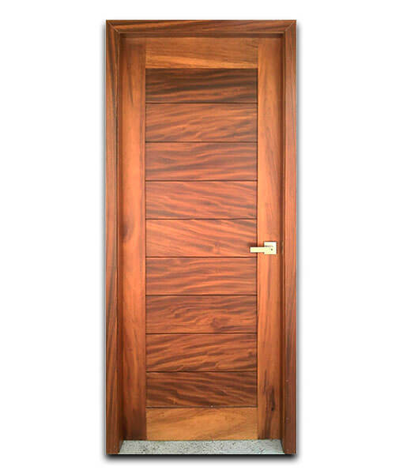
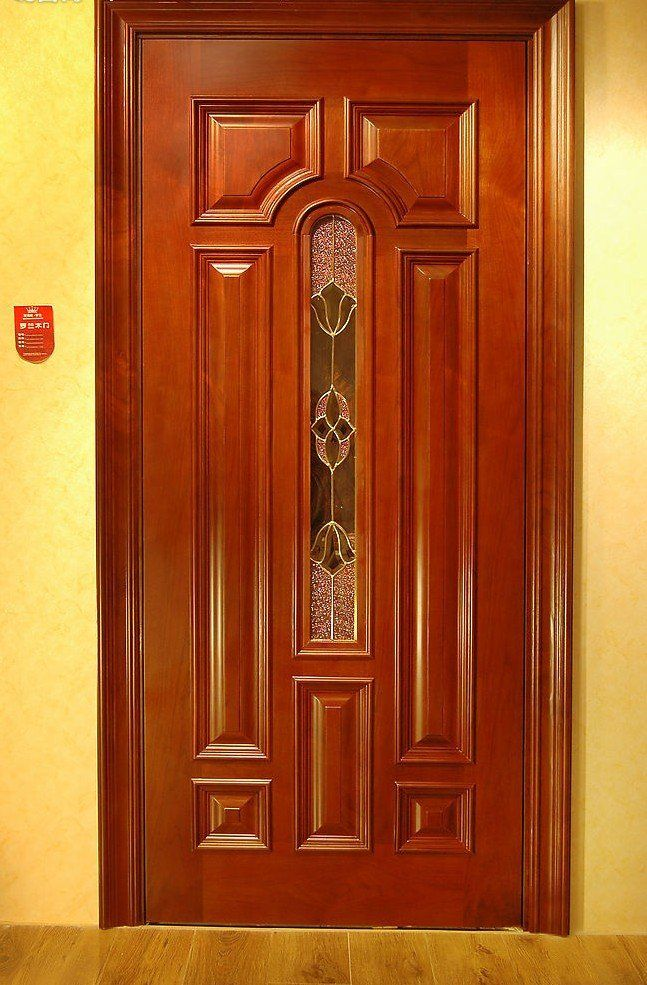
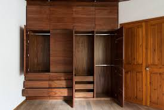
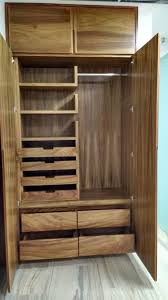
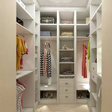

perfil de madera formado por dos largueros y un testero que sirve de soporte del cerco y que se coloca en obra como plantilla para el hueco. bastidor de madera con un forro de 5mm. con un enchapado de madera de algunas de las diferentes maderas;Encino,nogal,parota,rosa modara entre otros.

Así, hoy existe una gran diversidad de tipos de armario los cuales se pueden encontrar, por ejemplo, a lo largo y ancho de las diversas estancias que componen una vivienda. Así, en la cocina están para guardar alimentos o utensilios, en las habitaciones se utilizan para tener colocadas todas las prendas de vestir y en el baño se emplean para conservar todos los productos de higiene personal y estéticos. Metálicos, de plástico o de madera. Así pueden ser los armarios aunque, no obstante, uno de los más frecuentes es el conocido como empotrado que es aquel que se crea aprovechando un hueco de una estancia por lo que su única parte visible es la puerta que lo abre.
